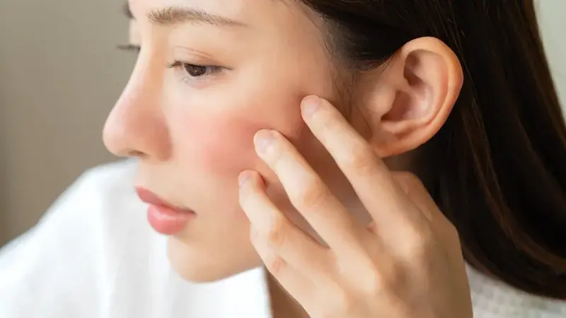
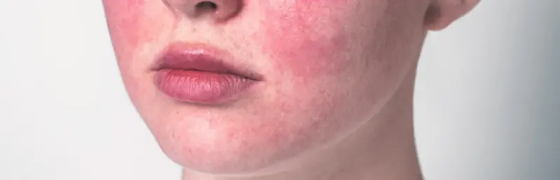
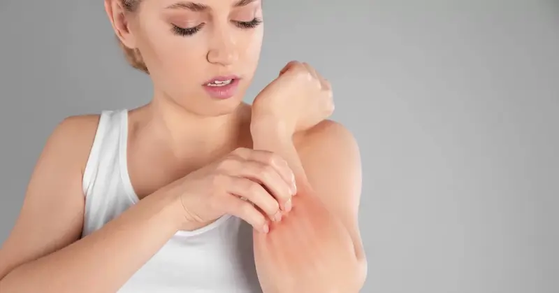
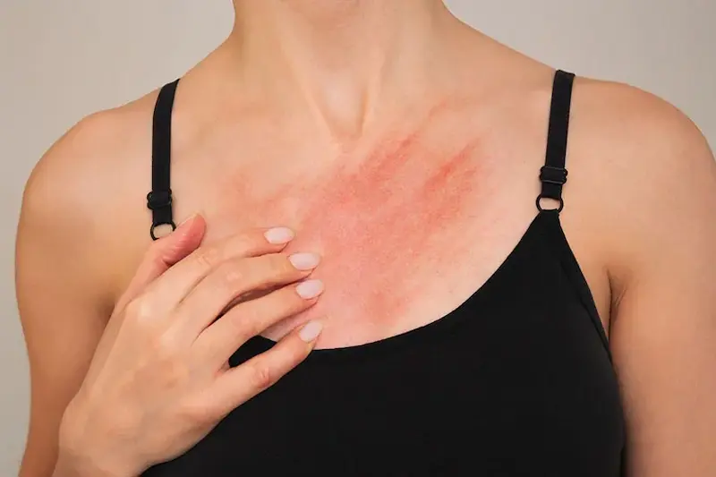

Деликатное очищение и защита естественного барьера необходимы для успокоения раздражений и уменьшения видимых покраснений.Что такое раздражение и диффузное покраснение?
Раздражение и покраснение — это признаки поврежденного кожного барьера или повышенной сосудистой реактивности. В отличие от легкого временного румянца, стойкое покраснение (эритема) указывает на то, что кожа больше не может защищаться самостоятельно от внешних агрессоров, а капилляры остаются расширенными и заметными на поверхности.
Важно понимать: раздраженная кожа нуждается не в «более тщательном» очищении, а в защите. В климате Молдовы с морозными зимами и засушливым, жарким летом защитный барьер находится под постоянным ударом. Без адекватного успокаивающего ухода воспаление становится хроническим, что ведет к огрубению текстуры, чувству стянутости и «горящему» лицу.
Причины чувствительности и поврежденный барьер
Основным триггером является трансэпидермальная потеря воды (ТЭПВ), вызванная разрушением липидного слоя. Страдает не только комфорт, но и здоровье сосудов: когда кожа воспалена, микроциркуляция ускоряется, сосуды становятся хрупкими — этот процесс лежит в основе развития купероза и розацеа.
Критическим фактором, часто встречающимся в крупных городах, таких как Кишинев или Бельцы, является загрязнение воздуха и очень жесткая вода. Тяжелые металлы и хлор нарушают природный баланс, делая кожу уязвимой. Результат — лицо, которое бурно реагирует на всё: от перепада температур до активных компонентов в косметике. Правильный уход должен быть не «активным», а «реструктурирующим».

Правила успокоения раздражений
Ингредиенты, которые успокаивают и восстанавливают
| Ингредиент | Действие на покраснение |
|---|---|
| Центелла Азиатская (CICA) | Ускоряет регенерацию кожи и мгновенно успокаивает жжение или ощущение стянутости. |
| Ниацинамид (Витамин B3) | Снимает воспаление сосудов и укрепляет защитный барьер для предотвращения новых раздражений. |
| Пантенол (Провитамин B5) | Действует как магнит для влаги и быстро уменьшает эритему (покраснение), вызванную внешними факторами. |
| Церамиды | «Склеивают» клетки рогового слоя, устраняя бреши, через которые проникают раздражители. |

Чего НЕЛЬЗЯ делать при раздраженной коже?
Как уменьшить покраснение в долгосрочной перспективе?
Кожный барьер не восстанавливается за одну ночь — здесь важна системность. Золотое правило: меньше значит больше. Как только вы сократите количество агрессивных активных компонентов и сосредоточитесь на увлажнении, кожа вернет себе способность к самозащите.
Для стойкого результата выбирайте гипоаллергенные продукты, защищающие микроциркуляцию. В сочетании с минеральной солнцезащитой они предотвратят вазодилатацию и сохранят кожу спокойной, выравнивая её тон и избавляя от эффекта «вечно красного лица».

Ежедневный протокол: Утро vs Вечер
Чтобы успокоить покраснения и укрепить защитный барьер, важно разделить рутину на две фазы: защитную и восстанавливающую.
| Время суток | Этап ухода | Зачем это нужно? |
|---|---|---|
| Утро | Очищение без смывания + CICA-сыворотка + SPF 50 | Защищает сосуды от перепадов температуры и УФ-излучения — главных факторов, провоцирующих покраснение. |
| Вечер | Деликатное умывание + Крем с Церамидами | Восстанавливает липидный «цемент» кожи в ночное время, снижая чувствительность и чувство жжения. |
| Уход (в течение дня) | Термальная вода / Успокаивающий спрей | Освежает кожу и снижает местную температуру лица, предотвращая хроническое расширение сосудов. |
| SOS-Care | Увлажняющая маска «Leave-on» | Обеспечивает приток противовоспалительных ингредиентов, чтобы быстро «потушить» вспышки сильного раздражения. |
Совет для Молдовы: В переходные периоды (весна/осень), когда в нашем регионе дуют сильные сухие ветра, реактивная кожа страдает больше всего. Используйте колд-крем (крем-барьер), чтобы создать физический щит от пронизывающего ветра, который буквально «выдувает» влагу из тканей.
Влияние городской среды на чувствительную кожу
В Молдове загрязнение воздуха и известковая вода являются скрытыми врагами реактивного эпидермиса. Частицы мелкой пыли проникают через поврежденный барьер, вызывая окислительный стресс, который проявляется покраснением и зудом. Жесткая вода в Кишиневе и других крупных городах разрушает кислотную мантию, оставляя кожу «беззащитной».
В таких условиях спасением становится минимализм: выбирайте продукты с коротким составом и высокой степенью очистки компонентов. Рутина, основанная на успокоении, не только устраняет мгновенный дискомфорт, но и «тренирует» кожу быть более устойчивой к агрессивным факторам городской среды.
Часто задаваемые вопросы о раздражениях и покраснениях
Как быстро проходит покраснение после использования CICA-крема?
Чувство дискомфорта и жжения обычно утихает в течение первых 30 минут. Однако для заметного уменьшения диффузного покраснения (эритемы) требуется регулярное использование не менее 28 дней, чтобы кожный барьер успел восстановиться.
Всегда ли покраснение лица является признаком розацеа?
Не обязательно. Покраснение может быть вызвано поврежденным барьером, аллергией или факторами среды. Но если оно становится стойким и появляются мелкие сосуды, рекомендуется визит к дерматологу. В клиниках Кишинева диагностика розацеа часто дополняется аппаратными методами, такими как лазерная терапия или IPL.
Почему моя кожа становится краснее сразу после умывания?
Это происходит из-за слишком горячей воды или очень жесткой воды в городах, которая раздражает нервные окончания и расширяет сосуды. Чтобы предотвратить такой «флашинг», умывайтесь теплой водой и выбирайте очищающие гели без сульфатов или успокаивающий мицеллярный раствор.
Можно ли использовать отшелушивающие кислоты при раздраженной коже?
В период обострения рекомендуется приостановить использование сильных кислот (гликолевой, салициловой). Вы сможете вернуться к ним только после заживления кожи, выбирая более мягкие варианты, такие как PHA-кислоты или азелаиновая кислота, известная своими противовоспалительными свойствами.